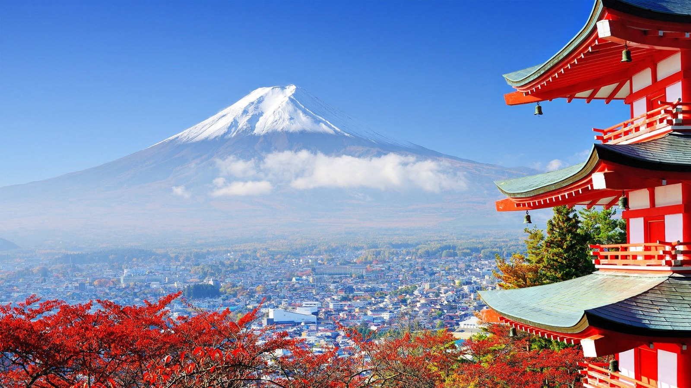

Poucos lugares no mundo conseguem equilibrar tão bem o passado e o futuro como o Japão. Em uma mesma viagem, é possível caminhar por florestas de bambu e templos xintoístas em Kyoto pela manhã e, à noite, se perder nas luzes de neon e na agitação de Shibuya, em Tóquio.
Esta dualidade é o que torna o Japão um destino fascinante. A cultura japonesa, com seu profundo respeito pela tradição, pela natureza e pelo próximo, é evidente em cada detalhe, desde a cerimônia do chá até a pontualidade impecável dos trens-bala.
O Contraste entre Kyoto e Tóquio
Em Kyoto, a antiga capital imperial, o tempo parece passar mais devagar. Visitar o Templo Dourado (Kinkaku-ji), caminhar pelo bairro das gueixas em Gion e explorar o Santuário Fushimi Inari com seus milhares de portões vermelhos é como entrar em outro mundo.
Já em Tóquio, a energia é contagiante. A metrópole é um centro de tecnologia, moda e gastronomia. Atravessar o cruzamento mais movimentado do mundo em Shibuya, explorar os bairros de Harajuku e Akihabara e jantar em um restaurante com estrelas Michelin são experiências que mostram o lado futurista do país.
No Japão, cada detalhe tem um significado, e cada momento é uma oportunidade para aprender e se encantar.
Viajar pelo Japão foi uma lição de organização, respeito e beleza. É um país que desafia suas percepções e enriquece a alma. Recomendo a todos que buscam uma viagem que seja ao mesmo tempo tranquila e eletrizante.
